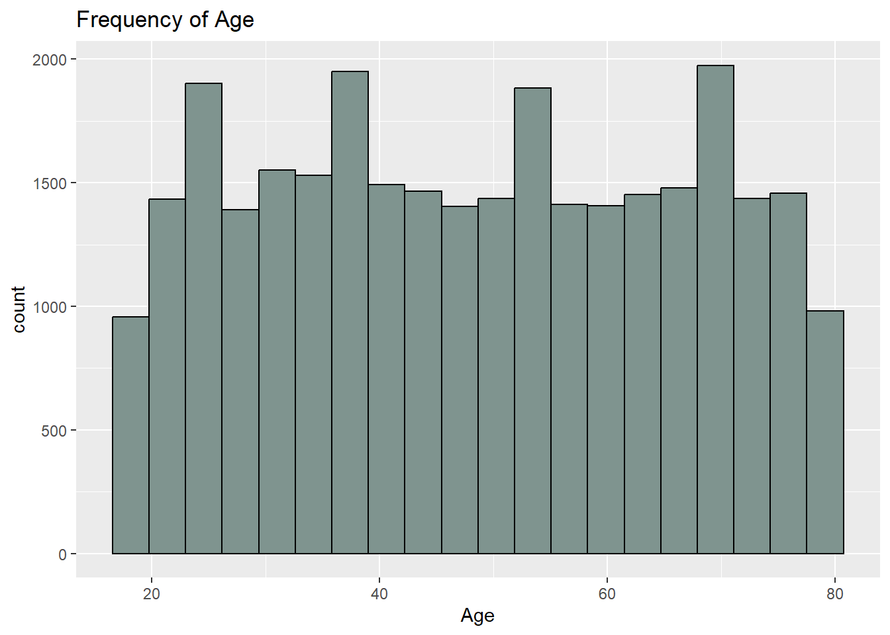
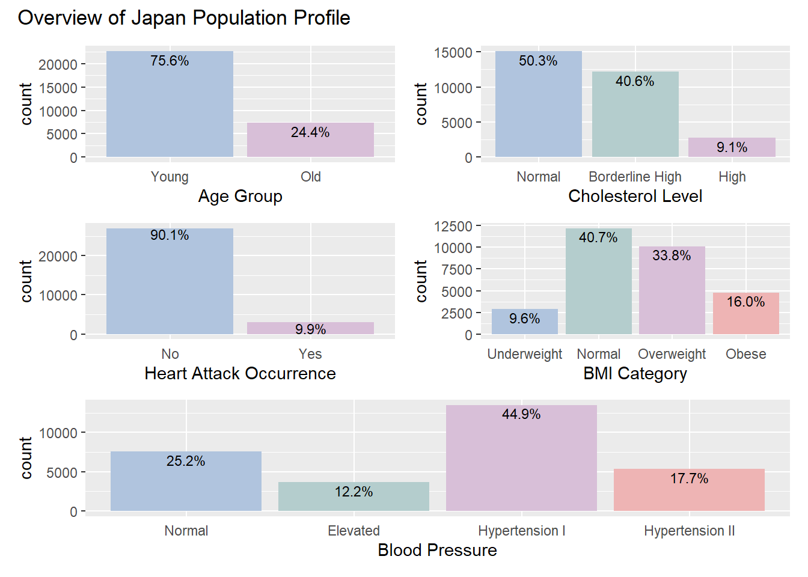
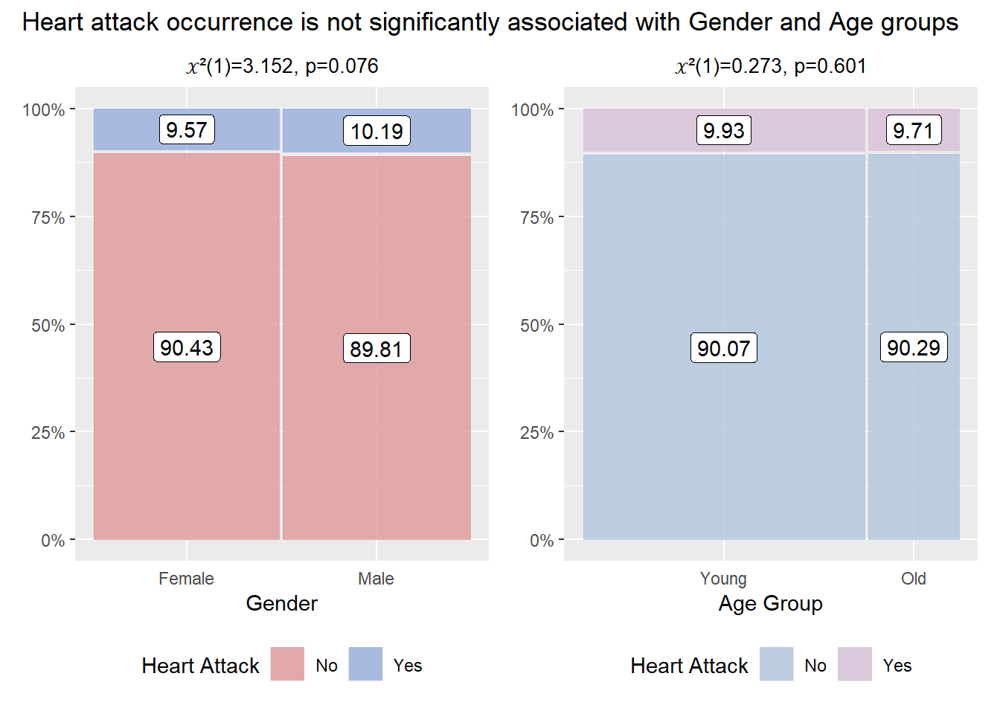
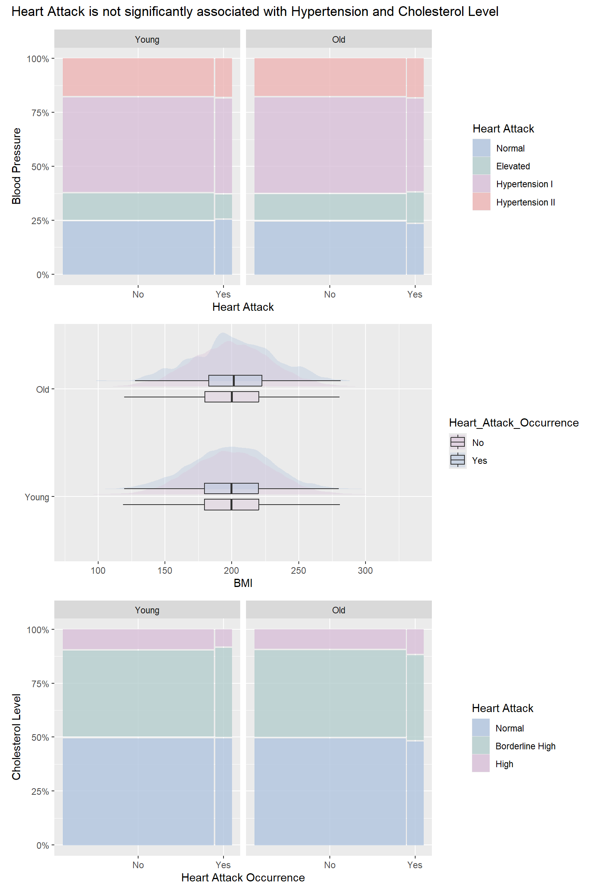

Take-home Exercise 1
1 Overview
1.1 Background
Heart attack is one of the leading causes of mortality globally. According to findings of research studies, heart attacks are increasingly common in young adults (aged 40 or below). The alarming trend highlights a need to understand the potential causes and risk factors of early heart attacks through examining the profiles of young adult and older adult patients, including demographic, lifestyle factors and medical history, to enable early detection and enforcement of preventive measures.
1.2 Dataset
In this exercise, we have obtained a dataset on heart attack incidents in Japan from Kaggle, consisting of data on individuals aged 18 to 79.
1.3 Objectives
As part of an international media company that publishes weekly content on digital platforms, we will Use the Japan heart attack dataset to perform Exploratory Data Analysis and generate statistical visualisations for an article, covering insights on:
- The general profile of Japan population
- Trends and associations of heart attack occurrence with demographic, lifestyle factors and medical history in the Japan populations.
- Age-specific factors for heart attack occurrence
2 Getting Started
2.1 Loading Packages
The R packages used in this exercise includes:
- tidyverse (i.e. readr, tidyr, dplyr, ggplot2) for performing data science tasks such as importing, tidying, and wrangling data, as well as creating graphs
- knitr for displaying tables
- patchwork for preparing composite figure created using ggplot2
- ggstats for creating diverging barplots
- ggdist for visualising distributions and uncertainty
- ggmosaic for creating mosaic plots
- ggstatsplot for visualising significant test of association using stacked barplots
2.2 Importing Data
The dataset used in this exercise is the japan_heart_attack_dataset.csv file downloaded from Kaggle. The file is imported into R environment using read_csv().
Using the glimpse() function, we observe that the dataset consists of 30,000 records spanning across 32 columns. Of which, there are 17 relevant variables and 15 extra column variables which are irrelevant to our analysis.
In addition, by viewing the first few entries of each column, we can see that there are both categorical and continuous variables in the dataset.
With a focus on the 17 relevant variables, a data dictionary table is generated, showing the range for the 7 continuous variables and the unique values for the 10 categorical variables.
Rows: 30,000
Columns: 32
$ Age <dbl> 56, 69, 46, 32, 60, 25, 78, 38, 56, 75, 36, 40…
$ Gender <chr> "Male", "Male", "Male", "Female", "Female", "F…
$ Region <chr> "Urban", "Urban", "Rural", "Urban", "Rural", "…
$ Smoking_History <chr> "Yes", "No", "Yes", "No", "No", "No", "No", "Y…
$ Diabetes_History <chr> "No", "No", "No", "No", "No", "No", "Yes", "No…
$ Hypertension_History <chr> "No", "No", "No", "No", "No", "No", "Yes", "No…
$ Cholesterol_Level <dbl> 186.4002, 185.1367, 210.6966, 211.1655, 223.81…
$ Physical_Activity <chr> "Moderate", "Low", "Low", "Moderate", "High", …
$ Diet_Quality <chr> "Poor", "Good", "Average", "Good", "Good", "Go…
$ Alcohol_Consumption <chr> "Low", "Low", "Moderate", "High", "High", "Hig…
$ Stress_Levels <dbl> 3.644786, 3.384056, 3.810911, 6.014878, 6.8068…
$ BMI <dbl> 33.96135, 28.24287, 27.60121, 23.71729, 19.771…
$ Heart_Rate <dbl> 72.30153, 57.45764, 64.65870, 55.13147, 76.667…
$ Systolic_BP <dbl> 123.90209, 129.89331, 145.65490, 131.78522, 10…
$ Diastolic_BP <dbl> 85.68281, 73.52426, 71.99481, 68.21133, 92.902…
$ Family_History <chr> "No", "Yes", "No", "No", "No", "No", "No", "No…
$ Heart_Attack_Occurrence <chr> "No", "No", "No", "No", "No", "No", "No", "No"…
$ Extra_Column_1 <dbl> 0.40498852, 0.03627815, 0.85297888, 0.39085280…
$ Extra_Column_2 <dbl> 0.43330004, 0.51256694, 0.21959083, 0.29684675…
$ Extra_Column_3 <dbl> 0.62871236, 0.66839275, 0.61343656, 0.15572404…
$ Extra_Column_4 <dbl> 0.70160955, 0.11552874, 0.50800995, 0.87025144…
$ Extra_Column_5 <dbl> 0.49814235, 0.42381938, 0.90066981, 0.39035591…
$ Extra_Column_6 <dbl> 0.007901312, 0.083932768, 0.227205241, 0.40318…
$ Extra_Column_7 <dbl> 0.79458257, 0.68895108, 0.49634358, 0.74140891…
$ Extra_Column_8 <dbl> 0.29077922, 0.83016364, 0.75210679, 0.22396813…
$ Extra_Column_9 <dbl> 0.49719307, 0.63449028, 0.18150125, 0.32931387…
$ Extra_Column_10 <dbl> 0.52199452, 0.30204337, 0.62918031, 0.14319054…
$ Extra_Column_11 <dbl> 0.79965663, 0.04368285, 0.01827617, 0.90778075…
$ Extra_Column_12 <dbl> 0.72239788, 0.45166789, 0.06322702, 0.54232201…
$ Extra_Column_13 <dbl> 0.1487387, 0.8786714, 0.1465122, 0.9224606, 0.…
$ Extra_Column_14 <dbl> 0.8340099, 0.5356022, 0.9972962, 0.6262165, 0.…
$ Extra_Column_15 <dbl> 0.061632229, 0.617825340, 0.974455410, 0.22860…Show the code
data_dict <- data.frame(matrix(ncol = 3, nrow = 0))
x <- c("Variable", "Type", "Values")
colnames(data_dict) <- x
column_names <- colnames(heart_attack)[1:17]
for (column in column_names){
values <- heart_attack[, column]
if (class(heart_attack[[column]])=="numeric"){
col_label<-paste0("(", round(min(values), digits=2), ", ", round(max(values), digits=2), ")")
col_type="Continuous"
}
else {
col_label<-paste0(unique(values))
col_type="Categorical"
}
new.row <- data.frame(Variable = column, Type = col_type , Values = col_label)
data_dict <- rbind(data_dict, new.row)
}
data_dict["Description"]<- c("","","","","", "Patient hypertension ( high blood pressure) history
", "normal total cholesterol level (mg/dL) < 200
", "","","","", "Healthy BMI range is 18.5 to 24.9
", "", "Normal systolic blood pressure (mmHg) <120
", "Normal diastolic blood pressure (mmHg) <80
", "","")
knitr::kable(data_dict, "html")| Variable | Type | Values | Description |
|---|---|---|---|
| Age | Continuous | (18, 79) | |
| Gender | Categorical | c("Male", "Female") | |
| Region | Categorical | c("Urban", "Rural") | |
| Smoking_History | Categorical | c("Yes", "No") | |
| Diabetes_History | Categorical | c("No", "Yes") | |
| Hypertension_History | Categorical | c("No", "Yes") | Patient hypertension ( high blood pressure) history |
| Cholesterol_Level | Continuous | (80.02, 336.86) | normal total cholesterol level (mg/dL) < 200 |
| Physical_Activity | Categorical | c("Moderate", "Low", "High") | |
| Diet_Quality | Categorical | c("Poor", "Good", "Average") | |
| Alcohol_Consumption | Categorical | c("Low", "Moderate", "High", "None") | |
| Stress_Levels | Continuous | (0, 10) | |
| BMI | Continuous | (5.58, 46.1) | Healthy BMI range is 18.5 to 24.9 |
| Heart_Rate | Continuous | (30.03, 108.78) | |
| Systolic_BP | Continuous | (56.23, 178.77) | Normal systolic blood pressure (mmHg) <120 |
| Diastolic_BP | Continuous | (39.95, 117.67) | Normal diastolic blood pressure (mmHg) <80 |
| Family_History | Categorical | c("No", "Yes") | |
| Heart_Attack_Occurrence | Categorical | c("No", "Yes") |
3 Data Wrangling
3.1 Removing irrelevant data
We first remove the 15 ‘extra columns’ in the dataset, which are irrelvant for our analysis, using the code below.
This leaves us with just 17 variables:
General Demographic Variables
- Age
- Gender
- Region
- BMI
Lifestyle Factors
- Smoking_History
- Physical_Activity
- Diet_Quality
- Alcohol_Consumption
- Stress_Levels
Medical History
- Diabetes_History
- Hypertension_History
- Cholesterol_Level
- Heart_Rate
- Systolic_BP
- Diastolic_BP
- Family_History
- Heart_Attack_Occurrence
3.2 Check for duplicated or missing values
Next, the duplicated() and is.na() functions are used to check for duplicate records and missing values in the dataset respectively.
There are no duplicated records or missing values in this dataset.
# A tibble: 0 × 17
# ℹ 17 variables: Age <dbl>, Gender <chr>, Region <chr>, Smoking_History <chr>,
# Diabetes_History <chr>, Hypertension_History <chr>,
# Cholesterol_Level <dbl>, Physical_Activity <chr>, Diet_Quality <chr>,
# Alcohol_Consumption <chr>, Stress_Levels <dbl>, BMI <dbl>,
# Heart_Rate <dbl>, Systolic_BP <dbl>, Diastolic_BP <dbl>,
# Family_History <chr>, Heart_Attack_Occurrence <chr>3.3 Recode Age
The age distribution in the population is shown in the histogram below. There is a relatively even spread of records from young to old.
Show the code

To facilitate comparison of profiles of younger versus older heart attack patients, we can create a new variable named Age_Group to bin the records into different age groups using ifelse statements:
- Young Adults: 18-39
- Middle-aged Adults: 40-65
- Old Adults: 66-79
3.4 Recode BMI
The BMI distribution in the population is shown in the histogram below. We can observe that the BMI distribution resembles a normal distribution and about half of the population has BMI > 25, which is above the healthy range. For better comparisons in our analyses, we should bin BMI.
Show the code
BMI can be further categorised according to the criterion below, according to definition by Centers for Disease Control and Prevention:
- Underweight: <18.5
- Normal: 18.5 to <25
- Overweight: 25 to <30
- Obese: ≥30
3.5 Creating blood pressure variable
As the dataset provides the Systolic and Diastolic Blood Pressures, we can use these information to further categorise the population based on their blood pressure category, according to the criterion shown in the figure below.

The distribution of the Systolic and Diastolic blood pressures are shown in the figure below. There are no records with hypertensive crisis (Systolic BP > 180 mmHg or Diastolic BP > 120 mmHg). Therefore, we will only have 4 blood pressure groups: Normal, Elevated, Hypertension I and Hypertension II.
Show the code
p1<-ggplot(df, aes(Systolic_BP)) +
geom_histogram(bins=20,
boundary = 100,
color="black",
fill="thistle") +
scale_x_continuous(n.breaks = 10) +
labs(title = "Frequency of Systolic BP") +
xlab("Systolic BP (mmHg)")
p2<-ggplot(df, aes(Diastolic_BP)) +
geom_histogram(bins=20,
boundary = 100,
color="black",
fill="lightsteelblue") +
labs(title = "Frequency of Diastolic BP")+
xlab("Diastolic BP (mmHg)")
p1 + p2 + plot_annotation(tag_levels = 'I')
3.6 Recode Cholesterol Level
Total Cholesterol Level can also be further categorised according to the criterion below:
3.7 Ordering levels for ordinal categorical variables
For ordinal categorical variables, we will order the different levels in an ascending order using factor(), so that the results will be displayed according to the order we have set in the graphs we will plot subsequently in our analysis.
df$Physical_Activity <- factor(df$Physical_Activity,
levels = c("Low", "Moderate", "High"), ordered = TRUE )
df$Diet_Quality <- factor(df$Diet_Quality,
levels = c("Poor", "Average", "Good"), ordered = TRUE)
df$Alcohol_Consumption <- factor(df$Alcohol_Consumption,
levels = c("None", "Low", "Moderate", "High"), ordered = TRUE)
df$Age_Groups <- factor(df$Age_Groups,
levels = c("Young", "Middle-aged", "Old"), ordered = TRUE)
df$BMI_Category <- factor(df$BMI_Category,
levels = c("Underweight", "Normal", "Overweight", "Obese"), ordered = TRUE)
df$Blood_Pressure <- factor(df$Blood_Pressure,
levels = c("Normal", "Elevated", "Hypertension I", "Hypertension II"), ordered = TRUE)
df$Cholesterol_Category <- factor(df$Cholesterol_Category,
levels = c("Normal", "Borderline High", "High"), ordered = TRUE)The first 5 results of the final dataset are displayed below using kable() of the knitr package.
| Age | Gender | Region | Smoking_History | Diabetes_History | Hypertension_History | Cholesterol_Level | Physical_Activity | Diet_Quality | Alcohol_Consumption | Stress_Levels | BMI | Heart_Rate | Systolic_BP | Diastolic_BP | Family_History | Heart_Attack_Occurrence | Age_Groups | BMI_Category | Blood_Pressure | Cholesterol_Category |
|---|---|---|---|---|---|---|---|---|---|---|---|---|---|---|---|---|---|---|---|---|
| 56 | Male | Urban | Yes | No | No | 186.4002 | Moderate | Poor | Low | 3.644786 | 33.96135 | 72.30153 | 123.9021 | 85.68281 | No | No | Middle-aged | Obese | Hypertension I | Normal |
| 69 | Male | Urban | No | No | No | 185.1367 | Low | Good | Low | 3.384056 | 28.24287 | 57.45764 | 129.8933 | 73.52426 | Yes | No | Old | Overweight | Elevated | Normal |
| 46 | Male | Rural | Yes | No | No | 210.6966 | Low | Average | Moderate | 3.810911 | 27.60121 | 64.65870 | 145.6549 | 71.99481 | No | No | Middle-aged | Overweight | Hypertension II | Borderline High |
| 32 | Female | Urban | No | No | No | 211.1655 | Moderate | Good | High | 6.014878 | 23.71729 | 55.13147 | 131.7852 | 68.21133 | No | No | Young | Normal | Hypertension I | Borderline High |
| 60 | Female | Rural | No | No | No | 223.8143 | High | Good | High | 6.806883 | 19.77158 | 76.66792 | 100.6946 | 92.90249 | No | No | Middle-aged | Normal | Hypertension II | Borderline High |
4 Exploratory Data Analysis and Statistical Visualisations
In this section, we will be conducting Exploratory Data Analysis on the processed dataset named df.
Before diving into the analysis, we first take a look at the distribution of some of the key variables closely-linked to heart attack in the Japan population: Age group, Cholesterol Level, Blood Pressure, BMI category and heart attack occurrence.
The ggplot() and geom_bar() functions from the ggplot2 package was used to generate the bar charts. stat = 'count' argument and geom_text() was used to add percentage annotations onto the bar chart. The bar chart colors were set using scale_fill_manual(). The axis labels were defined using labs(). The aesthetics of the bar charts were further customised using theme(). Individual plots were combined using patchwork package.
Show the code
p1<-ggplot(data=df,aes(x=Age_Groups, fill=Age_Groups))+
geom_bar(stat = "count")+
scale_fill_manual(values=c("lightsteelblue","lightcyan3","thistle"))+
geom_text(
aes(
label = scales::percent(..count../sum(..count..), accuracy = 0.1) # Calculate percentage using sum of counts
),
stat = "count",
vjust = 1.25, # Adjust text placement
size=3
) +
theme(axis.ticks.x = element_blank(), legend.position = "None")+
labs(x = "Age Group")
p2<-ggplot(data=df,aes(x=Blood_Pressure, fill=Blood_Pressure))+
geom_bar(stat = "count")+
scale_fill_manual(values=c("lightsteelblue","lightcyan3","thistle","rosybrown2" ))+
geom_text(
aes(
label = scales::percent(..count../sum(..count..), accuracy = 0.1) # Calculate percentage using sum of counts
),
stat = "count",
vjust = 1.25, # Adjust text placement
size=3
) +
theme( axis.ticks.x = element_blank(), legend.position = "None" )+
labs(x = "Blood Pressure")
p3<- ggplot(data=df,aes(x=Heart_Attack_Occurrence, fill=Heart_Attack_Occurrence))+
geom_bar(stat = "count")+
scale_fill_manual(values=c("lightsteelblue","thistle" ))+
geom_text(
aes(
label = scales::percent(..count../sum(..count..), accuracy = 0.1) # Calculate percentage using sum of counts
),
stat = "count",
vjust = 1.05, # Adjust text placement
size=3
) +
theme( axis.ticks.x = element_blank(), legend.position = "None" )+
labs(x = "Heart Attack Occurrence")
p4<- ggplot(data=df,aes(x=BMI_Category, fill=BMI_Category))+
geom_bar(stat = "count")+
scale_fill_manual(values=c("lightsteelblue","lightcyan3","thistle","rosybrown2" ))+
geom_text(
aes(
label = scales::percent(..count../sum(..count..), accuracy = 0.1) # Calculate percentage using sum of counts
),
stat = "count",
vjust = 1.25, # Adjust text placement
size=3
) +
theme( axis.ticks.x = element_blank(), legend.position = "None" )+
labs(x = "BMI Category", fill="BMI")
p5<- ggplot(data=df,aes(x=Cholesterol_Category, fill=Cholesterol_Category))+
geom_bar(stat = "count")+
scale_fill_manual(values=c("lightsteelblue","lightcyan3","thistle"))+
geom_text(
aes(
label = scales::percent(..count../sum(..count..), accuracy = 0.1) # Calculate percentage using sum of counts
),
stat = "count",
vjust = 1.25, # Adjust text placement
size=3
) +
theme(axis.ticks.x = element_blank(), legend.position = "None")+
labs(x = "Cholesterol Level")
(p1+p5)/(p3+p4)/p2+ plot_annotation(title= "Overview of Japan Population Profile")
4.1 Gender, Age Group and Heart Attack Occurrence
Next, we delve into bivariate analyses to understand correlation of heart attack with various factors. In this section, we will examine if biological factors like aging and gender are associated with heart attack. The figures below show the heart attack occurrence by Gender and Age Groups.
Mosaic plots were created using geom_mosaic() from the ggmosaic package and ggplot() from the ggplot2 package. labs(), theme() and scale_fill_manual from ggplot2 package were used to change the axis labels, theme and color of the graphs. scale_y_continuous() from ggplot2 was used to display the percentages.
Show the code
p1<-ggplot(df)+
geom_mosaic(aes(x = product(Heart_Attack_Occurrence, Gender), fill=Heart_Attack_Occurrence))+
scale_fill_manual(values=c("#DF9999","#99AEDF")) +
theme( axis.ticks.x = element_blank(), legend.position = "bottom" )+
labs(x = "Gender", y= "Heart Attack", fill="Heart Attack")+
scale_y_continuous(labels = scales::percent)
p2<-ggplot(df)+
geom_mosaic(aes(x = product(Heart_Attack_Occurrence, Age_Groups), fill=Heart_Attack_Occurrence))+
scale_fill_manual(values=c("lightsteelblue","thistle")) +
theme( axis.ticks.x = element_blank(), legend.position = "bottom" )+
labs(x = "Age Group", y= "Heart Attack", fill="Heart Attack")+
scale_y_continuous(labels = scales::percent)
(p1+p2)+ plot_annotation(title= "Heart attack occurrence is not significantly associated with Gender and Age groups")
4.2 BMI and Heart Attack Occurrrence
Next, we examine BMI distribution by age and gender, before investigating association of BMI categories with heart attack occurrence.
The ggplot(), geom_boxplot() and coord_flip() functions in the ggplot2 package are used to create the boxplot for BMI grouped by Age groups, colored by gender and change the orientation of the plot. The stat_halfeye() function from the ggdist package is used to show the BMI distributions for each Age group, by gender. The theme() and lab() functions in the ggplot2 package are then used to change axis labels and dictate legend position.
The ggbarstats() and grouped_ggbarstats() functions from ggstatsplot package are used to create the stacked bar charts with Chi-square test statistics. digits.perc, label.args, sample.size.label.args, label.args,ggplot.component` were used to specify the label size, color and axis labels.
The table() function is used to create contingency table before applying the chisq.test()` function from base R to compute the Chi-square results to extract the Chi-square residuals data.
Show the code
p1<-ggplot(df,
aes(x = Age_Groups,
y = BMI,
fill=Gender)) +
stat_halfeye(adjust = 0.5,
justification = -0.1,
.width = 0,
point_colour = NA,
position = position_dodge(0.1)) +
geom_boxplot(width = .2,
position = position_dodge(0.3),
outlier.shape = NA) +
labs(x = "",
y = "BMI") +
theme(
legend.position = "right",
axis.title.y = element_text(hjust=1, angle=0)) +
coord_flip()+
scale_fill_manual(values=alpha(c("thistle", "lightsteelblue"),0.35))
p2<-ggbarstats(df,
y = Heart_Attack_Occurrence,
x = BMI_Category,
digits.perc = 1,
label.args = list(size = 2.5, fill = "white"),
sample.size.label.args = list(size = 2.5),
legend.title = "BMI",
xlab="Heart Attack",
ggplot.component = list(theme( axis.ticks.x=element_blank()), scale_fill_manual(values=c("rosybrown2","thistle","lightsteelblue","lightcyan3"))
))
p1/p2Show the code
p<-grouped_ggbarstats(df,
y = Heart_Attack_Occurrence,
x = BMI_Category,
digits.perc = 1,
grouping.var = Age_Groups,
plotgrid.args = list(ncol = 2),
sample.size.label.args = list(size = 2.5),
label.args = list(size = 2.5, fill = "white"),
ggplot.component = list(theme(plot.subtitle = element_text(size = 8), axis.ticks.x=element_blank()), scale_fill_manual(values=c("rosybrown2","thistle","lightsteelblue","lightcyan3"))),
legend.title = "BMI",
xlab="Heart Attack")Chi-square test residual table for whole population
#Create contingency table
contingency_table <- table(df$BMI_Category, df$Heart_Attack_Occurrence)
# Perform chi-square test
chi_square_test <- chisq.test(contingency_table)
# View the results
pearson_residuals <- chi_square_test$residuals
print(pearson_residuals)
No Yes
Underweight 0.4921282 -1.4863132
Normal -0.5867653 1.7721340
Overweight -0.1104517 0.3335834
Obese 0.7163291 -2.1634392Chi-square test residual table for Young Adults
#Create contingency table
subset_df<-df[df$Age_Groups=='Young',]
contingency_table <- table(subset_df$BMI_Category, subset_df$Heart_Attack_Occurrence)
# Perform chi-square test
chi_square_test <- chisq.test(contingency_table)
# View the results
pearson_residuals <- chi_square_test$residuals
print(pearson_residuals)
No Yes
Underweight 0.2641421 -0.8146029
Normal -0.4873117 1.5028483
Overweight -0.1114740 0.3437812
Obese 0.7150849 -2.20529124.3 Association of Heart Attack with Hypertension and Cholesterol
Given the high incidence of hypertension observed in the earlier section, we will investigate whether hypertension is associated with an increased risk of heart attack.
Mosaic plots were created using geom_mosaic() from the ggmosaic package and ggplot() from the ggplot2 package. labs(), theme() and scale_fill_manual from ggplot2 package were used to change the axis labels, theme and color of the graphs. facet_wrap() was used to facet the mosaic plots by Age Group. scale_y_continuous() from ggplot2 was used to display the percentages.
Show the code
p1<-ggplot(data=df) +
geom_mosaic(aes(x = product(Blood_Pressure,Heart_Attack_Occurrence), fill=Blood_Pressure))+
theme(legend.position="right") +
labs(y = "Blood Pressure",
x = "Heart Attack")+
scale_fill_manual("Heart Attack",values=c( "lightsteelblue","lightcyan3", "thistle","rosybrown2"))+
scale_y_continuous(labels = scales::percent)+
facet_wrap(~Age_Groups)
p2<-ggplot(data=df) +
geom_mosaic(aes(x = product(Cholesterol_Category,Heart_Attack_Occurrence), fill=Cholesterol_Category))+
theme(legend.position="right") +
labs(y = "Cholesterol Level",
x = "Heart Attack Occurrence")+
scale_fill_manual("Heart Attack",values=c( "lightsteelblue","lightcyan3", "thistle"))+
facet_wrap(~Age_Groups) +
scale_y_continuous(labels = scales::percent)
p1/p2 + plot_layout(axis_titles = "collect")+ plot_annotation(title= "Heart Attack is not significantly associated with Hypertension and Cholesterol Level")
4.4 Association of Heart Attack with Medical History
Heart attack is typically caused by a combination of various interrelated risk factors. Therefore, it is essential to examine other factors such as underlying medical conditions, family history, and lifestyle choices. These factors may interact in complex ways, increasing the likelihood of heart attacks.
In this section, we will investigate if Diabetes History and Family History increases tendency of heart attack occurrence.
Show the code
p1<-ggplot(data=df) +
geom_mosaic(aes(x = product(Heart_Attack_Occurrence,Diabetes_History), fill=Heart_Attack_Occurrence))+
theme(legend.position="right") +
labs(x = "Diabetes History",
y = "Heart Attack Occurrence")+
scale_fill_manual("Heart Attack",values=c( "lightsteelblue", "thistle"))+
scale_y_continuous(labels = scales::percent)
p2<-ggplot(data=df) +
geom_mosaic(aes(x = product(Heart_Attack_Occurrence,Family_History), fill=Heart_Attack_Occurrence))+
theme(legend.position="right") +
labs(x = "Family History",
y = "Heart Attack Occurrence")+
scale_fill_manual("Heart Attack",values=c( "lightsteelblue", "thistle"))+
facet_wrap(~Age_Groups) +
scale_y_continuous(labels = scales::percent)
p2/p1Show the code
grouped_ggbarstats(df,
y = Heart_Attack_Occurrence,
x = Diabetes_History,
digits.perc = 1,
grouping.var = Age_Groups,
plotgrid.args = list(ncol = 2),
sample.size.label.args = list(size = 2.5),
label.args = list(size = 2.5, fill = "white"),
legend.title = "Diabetes History",
xlab="Heart Attack",
ggplot.component = list(theme(plot.subtitle = element_text(size = 8), axis.ticks.x=element_blank()),scale_fill_manual(values = c("thistle","lightsteelblue"))))Chi-square test residual table for Young Adults
#Create contingency table
subset_df<-df[df$Age_Groups=='Young',]
contingency_table <- table(subset_df$Diabetes_History, subset_df$Heart_Attack_Occurrence)
# Perform chi-square test
chi_square_test <- chisq.test(contingency_table)
# View the results
pearson_residuals <- chi_square_test$residuals
print(pearson_residuals)
No Yes
No 0.3881721 -1.1971061
Yes -0.7609653 2.34678424.5 Lifestyle Factors and Heart Attack Occurrence
In this section, we will investigate if lifestyle factors like physical activity, diet quality and alcohol consumption are associated with heart attack.
The gglikert() function from ggstats package is used to create the diverging bar charts. scale_fill_brewer(), theme() and labs() from *ggplot2` package is used to set the color palette, change axis labels and ticks.
Show the code
# Create the subset data for "Yes" and "No" heart attack occurrences
HA_y <- df %>% filter(Heart_Attack_Occurrence == "Yes") %>% select(Physical_Activity, Diet_Quality, Alcohol_Consumption)
HA_n <- df %>% filter(Heart_Attack_Occurrence == "No") %>% select(Physical_Activity, Diet_Quality, Alcohol_Consumption)
# Find the maximum length of the two subsets
max_len <- max(nrow(HA_y), nrow(HA_n))
# Pad the shorter dataframe with NAs
HA_y <- bind_rows(HA_y, data.frame(Physical_Activity = rep(NA, max_len - nrow(HA_y)), Diet_Quality = rep(NA, max_len - nrow(HA_y)),Alcohol_Consumption = rep(NA, max_len - nrow(HA_y))))
PA<-data.frame(Yes=HA_y$Physical_Activity, No=HA_n$Physical_Activity)
DQ<-data.frame(Yes=HA_y$Diet_Quality, No=HA_n$Diet_Quality)
AC<-data.frame(Yes=HA_y$Alcohol_Consumption, No=HA_n$Alcohol_Consumption)
p1<-gglikert(PA) +
scale_fill_brewer(palette="Blues") +
labs(x="Physical Activity", y="Heart Attack")+
theme(axis.ticks.x = element_blank(),
axis.ticks.y = element_blank(),
axis.text.x=element_blank())
p2<-gglikert(DQ) +
scale_fill_brewer(palette="Set1") +
labs(x="Diet Quality", y="Heart Attack")+
theme(axis.ticks.x = element_blank(),
axis.ticks.y = element_blank(),
axis.text.x=element_blank())
p3<-gglikert(AC) +
scale_fill_brewer(palette="Blues") +
labs(x="Alcohol Consumption", y="Heart Attack")+
theme(axis.ticks.x = element_blank(),
axis.ticks.y = element_blank(),
axis.text.x=element_blank())
(p1+p2)/p3+ plot_annotation(title="Heart attack is not associated with Physical Activity, Diet Quality\n&Alcohol consumption")5 Conclusion
Our analyses reveals a high prevalence of heart attack occurrence in the Japanese population, with approximately 10% affected, raising a cause for concern and emphasizes a pressing need for targeted cardiovascular health initiatives. Furthermore, significant portions of the population suffers from hypertension, elevated cholesterol levels, and/or are overweight or obese, all of which are well-known risk factors for heart disease.
More importantly, heart attack incidence is comparable between young adults (18-39) and adults aged 40 and above, highlighting an emerging concern for cardiovascular health in younger populations. In our analyses, BMI category was found to be associated with heart attack occurrence, particularly in young adults, suggesting age-specific effects. Diabetes history was additionally associated with heart attack in young adults.
On the other hand, hypertension, elevated cholesterol levels, family history, physical activity, diet quality, and alcohol consumption did not show a significant relationship with heart attack occurrence in this population.
These findings underscore the need for more comprehensive studies to identify heart attack risk factors among younger adults. Future research and analyses could focus on exploring the complex interactions between risk factors to provide a clearer understanding of the risk profiles for heart attack in different demographic groups.